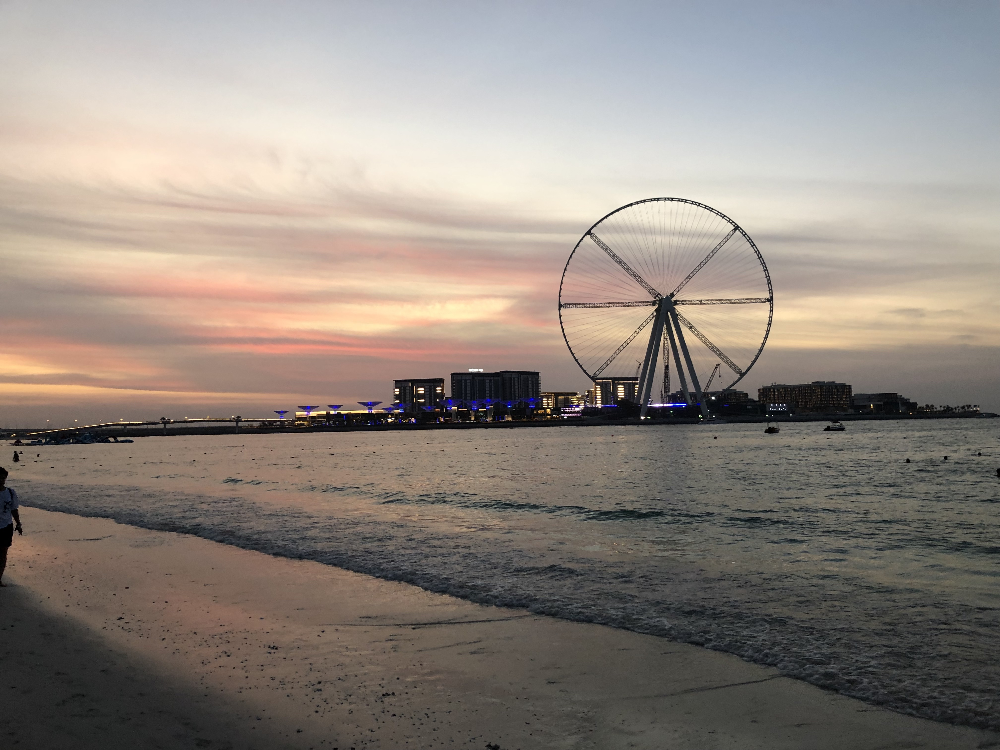

О районе
Dubai Marina – это район площадью всего 4 квадратных километра (меньше только Downtown), который располагается вдоль побережья Персидского залива и граничит с востока со знаменитыми островами Palm Jumeirah, а с запада – с новым насыпным островом Bluewaters Island. С противоположной от береговой линии стороны район отделён магистралью Sheikh Zayed Road.
Вдоль Dubai Marina проходит одноимённый рукотворный канал, который соединяется с заливом в двух местах.
В акватории Dubai Marina построена насыпная гавань Dubai Harbour. Она оснащена современным терминалом для круизных лайнеров и самой большой в регионе пристанью для яхт, рассчитанной на 700 мест.
Освоение территории, которую сегодня занимает Dubai Marina, началось в 2003 году. За это время было возведено около 200 небоскрёбов. Основной застройщик – крупнейшая в Дубае девелоперская компания Emaar Properties.
Внутри Dubai Marina выделяется микрорайон из 40 высоток Jumeirah Beach Residence (JBR). Он построен на участке, протянувшемся на 1,7 км вдоль побережья.
По данным Земельного департамента Дубая, c 1 января по 31 июля 2022 в Dubai Marina было заключено 4164 сделки купли-продажи недвижимости, что на 19% больше, чем за аналогичный период прошлого года. Доля Dubai Marina в общем объёме продаж эмирата (35 016) составляет 12%.

Средняя цена на недвижимость в Dubai Marina составляет 2300 дирхамов ($627) за квадратный фут, что на 26% больше, чем в прошлом году (1800 дирхамов).

Восходящую тенденцию на рынке должны поддержать принятые весной изменения в законодательстве Дубая, касающиеся предоставления «золотых» и «зелёных» виз, которые вступают в силу с 1 сентября 2022 года. В соответствии с новыми правилами снижен порог вложений в недвижимость, необходимый для получения 10-летней резиденции. Теперь он составляет 2 миллиона дирхамов ($545 000). Оформить ВНЖ и начать или продолжить свою карьеру в Дубае могут также квалифицированные специалисты, предприниматели, учёные.
 Район Марина в Дубае
Район Марина в Дубае